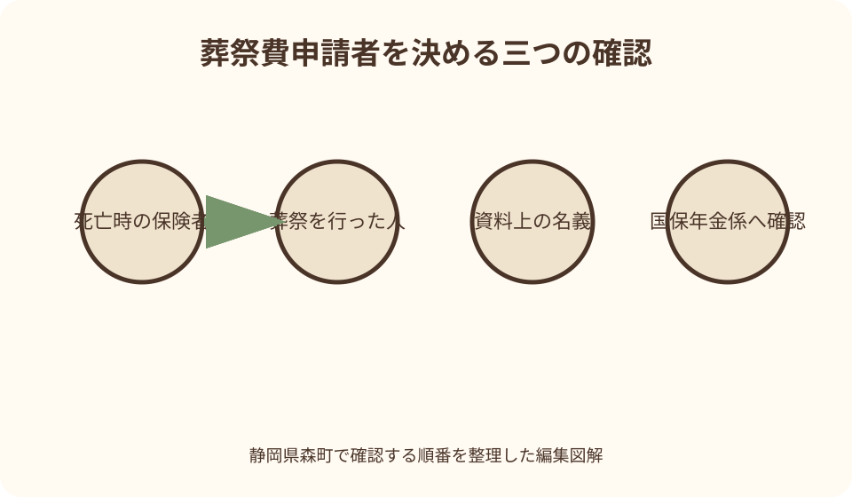
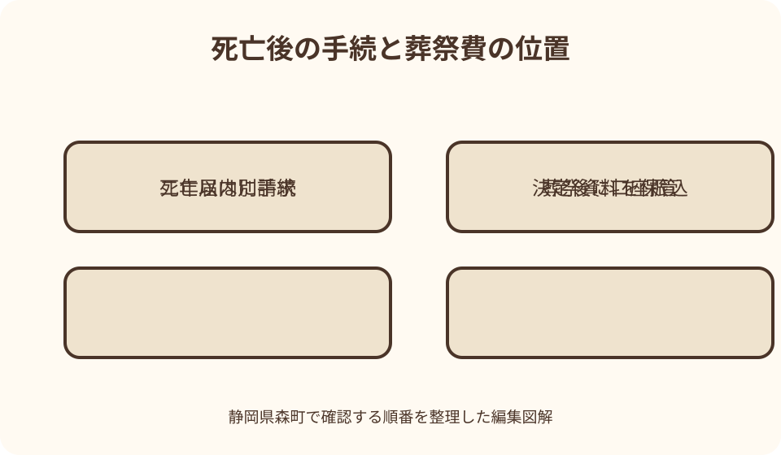

健康・医療・保険｜最終確認 2026-08-10
静岡県森町の国民健康保険「葬祭費」｜5万円の申請者・期限・必要書類を整理
葬儀後は、死亡届、火葬、年金、保険、相続など多くの手続が重なります。静岡県森町の国民健康保険では、被保険者が亡くなり葬祭を行ったとき、葬祭を行った人へ5万円の葬祭費が支給されます。ただし、死亡届を出せば自動的に振り込まれる給付ではありません。故人の加入先、申請者となる人、葬祭を行ったことを示す資料を分けて確認する必要があります。

編集イラスト最初に結論：森町国保の葬祭費は5万円
静岡県森町の公式案内では、国民健康保険の被保険者が死亡し、葬祭を行ったときの葬祭費は5万円です。入院費や葬儀費用を実費精算する仕組みではなく、町が定めた額を申請に基づいて支給する給付です。
支給先は、故人の相続人と自動的に決まるわけではありません。国民健康保険法と条例の考え方では、葬祭を行った人が受給者となります。一般には喪主が想定されますが、実際に誰が葬祭を執行したかが重要です。
死亡届を森町へ提出しても、葬祭費の請求まで自動的に完了するわけではありません。戸籍の届出は住民係、国保の給付は国保年金係というように目的が異なるため、別の手続として確認します。
急いでいる家族は、まず故人が死亡日時点で森町国保の被保険者だったか、誰が葬祭を行ったか、葬祭を示す書類が誰の名義かの三点を整理してください。ここが決まると窓口への質問が具体的になります。
葬祭費は葬儀代の領収額を補填する制度ではない
葬祭費という名称から、葬儀社へ支払った費用の一部が領収額に応じて返ると考えがちです。しかし森町国保の案内は定額5万円としており、葬儀費用が高いほど支給額が増える制度ではありません。
反対に、小規模な葬送だから一律に対象外とも言い切れません。重要なのは『葬祭を行った』と認められるかです。直葬、家族葬など名称だけで判断せず、実施内容と証明資料を国保年金係へ説明します。
葬祭費は香典、死亡保険金、相続財産の分配とは別の制度です。家族内で費用負担を精算するときも、5万円を誰の相続分にするかより先に、給付の申請者と振込先を町へ確認します。
森町の国保給付として扱うのは、死亡時に森町国保の資格があった人です。故人が勤務先の健康保険、国保組合、後期高齢者医療など別制度へ加入していたなら、その保険者の埋葬料や葬祭費を確認します。
申請できるのは誰か
申請者は、単に故人と親族関係がある人ではなく、葬祭を行った人です。多くの場合は会葬礼状や葬儀の領収書に名がある喪主ですが、家族構成や葬送の形によって事情は異なります。
配偶者が必ず申請者になるわけでも、世帯主が必ず受け取るわけでもありません。故人と申請者の住所が違う場合でも、葬祭を行った事実を示せるかを中心に森町へ相談します。
葬儀費用を複数の兄弟姉妹で分担した場合、誰を葬祭執行者として請求書へ記載するかを家族で決め、資料上の名義と食い違うなら事情を説明できるようにします。5万円を複数人へ分割支給する制度だと決めつけないでください。
申請者本人が来庁できず、家族が書類を持参する場合は、委任状や代理人の本人確認書類が必要かを事前に尋ねます。請求者、来庁者、振込口座名義人が違う場合は、三者の関係も伝えます。
死亡時の加入先を最初に確定する
葬祭費の相談で最も大切な日付は、故人が亡くなった日です。その日に森町国保の被保険者だったかを、資格確認書、資格情報のお知らせ、マイナポータル、町の記録などで確認します。
75歳以上の人は原則として後期高齢者医療制度の被保険者です。森町公式の後期高齢者医療ページにも死亡時の届出と葬祭費振込口座の案内があるため、国保の葬祭費と混ぜず、該当制度へ申請します。
65歳以上75歳未満でも、一定の障害について認定を受け、後期高齢者医療へ加入している人がいます。年齢だけで森町国保だと判断せず、故人の資格書類に記載された保険者名を確認してください。
退職後まもなく亡くなった場合、以前の勤務先の健康保険から埋葬料等を受けられる可能性があります。森町国保と他制度のどちらへ請求するかは加入履歴で判断が変わるため、退職日、国保加入日、死亡日を並べて双方へ照会します。

死亡届と葬祭費申請は別の手続
死亡届は戸籍に死亡を記載し、火葬許可へつなぐための届出です。森町では住民生活課住民係が戸籍・住民異動に関する案内を掲載しています。葬祭費を支給する国保年金係の手続とは目的が違います。
葬儀社が死亡届を提出する場合でも、葬祭費の請求まで代行したとは限りません。どこまで依頼したかを葬儀社へ確認し、町の給付申請は家族の担当表へ残します。
死亡届の提出によって故人の住民記録へ死亡が反映されても、誰が葬祭を行い、どの口座へ支給するかまでは確定しません。葬祭費には別途、申請者側から情報を示す必要があります。
戸籍、国保、年金、介護保険、税などの窓口を一日で回る場合は、各手続の原本提出と写しの扱いを先に聞きます。一つしかない領収書や会葬礼状を別窓口へ渡してしまわないよう、受付前に整理します。
申請期限は二年を意識する
国民健康保険法第110条では、保険給付を受ける権利は、行使できる時から2年を経過すると時効によって消滅すると定めています。葬祭費も国保の保険給付なので、葬儀後の申請を長く放置しないことが重要です。
実務上、いつから2年を数えるかは葬祭を行った日を基準に案内する自治体が一般的ですが、個別の起算日は森町へ確認してください。死亡日だけを手帳へ書き、葬祭日の記録を失わないようにします。
二年近く経過している場合は、資料を完璧にそろえてから連絡しようとせず、まず国保年金係へ相談します。時効完成日を自己計算して諦めるのではなく、事実関係を伝えて受付可能性を確かめます。
家族が申請済みだと思っていた、領収書の名義を確認中だった、相続手続を優先していたという事情は起こり得ます。葬儀後一か月程度で行政手続の一覧を見直し、申請日と振込確認日を記録すると漏れを防げます。
必要書類は来庁前に森町へ確認する
森町の国民健康保険ページは葬祭費5万円を明記していますが、葬祭費請求に必要な持ち物の詳細までは掲載していません。ほかの自治体の一覧をそのまま使わず、国保年金係へ最新の必要物を確認するのが確実です。
確認候補となるのは、葬祭費請求書、申請者の本人確認資料、故人の国保資格が分かる物、振込先口座が分かる物、葬祭を行った人を確認できる会葬礼状や領収書などです。ただし、これは持参前の照会項目であり、森町が全てを必須としているとの断定ではありません。
葬儀社の領収書には、支払者ではなく契約者や喪主の名が記載されることがあります。申請予定者と名義が違うなら、請求書の宛名を書き換えるのではなく、町へ事情を説明し、補足資料を聞いてください。
振込口座については、申請者本人名義に限るか、別名義なら委任が必要かを確認します。金融機関名、支店名、預金種別、口座番号、名義のカナを読み取れる通帳や画面を準備すると記入間違いを防げます。
葬祭を行ったことをどう示すか
町が申請者を確認するため、会葬礼状、葬儀費用の領収書、火葬関係の書類などを求めることがあります。何が使えるかは葬送の形により異なるため、手元の書類名と記載名義を電話で伝えます。
家族葬で会葬礼状を作っていない場合でも、直ちに申請不能とは限りません。葬儀社の領収書、請求書、火葬許可関係書類など、葬祭執行者を確認できそうな資料を列挙し、代替可能な物を聞きます。
宗教儀礼を行わず火葬のみとした場合も、ウェブ記事だけで対象外と決めるべきではありません。いつ、どこで、誰が手配し、どの費用を負担したかを整理した上で森町の判断を仰ぎます。
領収書の原本を相続税や葬儀保険の請求にも使う予定なら、森町が原本確認後に返却するか、写しで足りるかを尋ねます。提出前に家族用の写しを取り、どの手続へ原本を持参したかも記録します。
森町役場へ相談するときの伝え方
相談先は森町役場住民生活課国保年金係です。町公式ページに掲載されている電話番号は0538-85-6313ですが、連絡時には最新の担当欄も確認してください。開庁時間や臨時変更も来庁前に確かめます。
電話では、故人の氏名、死亡日、死亡時の加入保険、葬祭日、葬祭を行った人、手元にある証明資料、希望する申請方法を順に伝えます。個人情報をメールへ不用意に書き込むより、町が指定する方法を聞きます。
質問は『必要書類は何ですか』に加え、『申請者と領収書名義が違う』『会葬礼状がない』『遠方で来庁が難しい』のように個別事情を添えます。一般的な一覧だけでは分からない追加資料を一度に確認できます。
窓口で請求書を作成するなら、記入した申請日、受付された書類、今後の照会先、振込時期の目安をメモします。支給決定前のため、具体的な入金日を葬儀費用の支払予定へ確定額として入れない方が安全です。

後期高齢者医療の葬祭費と混同しない
森町の後期高齢者医療制度ページでは、死亡時の持ち物として、死亡した人の保険証、会葬礼状または領収書、葬祭執行者の印鑑、葬祭費振込口座を掲げています。これは後期高齢者医療の案内です。
国保のウェブページに持ち物一覧がないからといって、この後期高齢者用一覧を無条件に転用してはいけません。参考にはなりますが、国保年金係へ『国民健康保険の葬祭費』と明示して必要物を確定します。
75歳の誕生日付近で亡くなった場合は、死亡日の資格を確認します。原則として75歳の誕生日から後期高齢者医療へ移るため、古い国保書類だけを見て申請先を決めないでください。
後期高齢者医療は静岡県後期高齢者医療広域連合が保険者で、森町が申請窓口となる事務があります。『役場の同じ係へ行くから同じ制度』ではなく、請求書の制度名まで確認します。
勤務先の健康保険・労災との重なり
会社員等が加入する健康保険には埋葬料や埋葬費があり、国保の葬祭費とは名称も根拠も異なります。故人の資格確認書や勤務先の証明から、死亡時点の保険者を確認する必要があります。
退職して森町国保へ加入した直後の死亡では、以前の健康保険の継続給付が関係することがあります。二つの制度へ当然に重ねて請求できると考えず、旧保険者と森町へ同じ日付情報を伝えて確認します。
業務上または通勤中の出来事が死亡原因に関係する場合、労災保険の葬祭料等が問題になる可能性があります。厚生労働省は、遺族に限らず葬祭を行った人への葬祭給付を案内しており、国保とは窓口も算定も別です。
事故、災害、被爆者援護など、死亡原因や本人の資格によって別制度の葬祭給付が関係する場合があります。葬儀社や親族の経験談だけで選ばず、加入保険と原因に応じた公的窓口へ確認してください。
申請後の振込と記録
請求書を出した時点と、支給が決定した時点は同じではありません。森町が資格と申請内容を確認した後に口座振込となるため、書類不足の連絡を受け取れる電話番号や住所を正確に書きます。
通帳には『葬祭費』以外の名称で入金表示される場合もあります。町から届く決定通知、申請控え、入金日を一組にし、誰のどの給付かを家族が追えるようにします。
葬儀費用を一人が立て替え、別の人が申請者となる場合は、入金後の家族内精算を曖昧にしない方がよいでしょう。町の給付判断と家族間の費用分担は別として記録します。
葬祭費の税務上の扱いや相続財産との関係を判断する必要がある場合は、税務署や税理士などへ具体的な給付名を伝えて相談します。本稿だけで申告上の結論を出さないでください。
森町での移動と家族分担
森町は森、一宮、園田、飯田、天方、三倉など地域によって役場までの移動時間が違います。北部の家族や町外在住の喪主は、来庁が必要か、代理や郵送が可能かを先に電話で尋ねます。
葬儀直後は、役場、金融機関、年金事務所、勤務先、葬儀社への連絡が重なります。一人が全部を抱えず、国保の加入確認、証明資料の保管、窓口相談、入金確認を分担します。
分担表には、手続名だけでなく『故人の加入保険』『申請者』『期限』『原本の所在』を記載します。同じ死亡に関する手続でも、相続人と葬祭執行者が一致するとは限りません。
オンラインで調べた家族はURLと閲覧日を共有します。『葬祭費は5万円』という結論だけを送ると、国保と後期高齢者医療、勤務先保険のどれを見たかが分からなくなるためです。
葬祭費の良い点
葬祭費の良い点は、故人の国保資格に基づき、葬祭を担った人へ定額の支援が届くことです。大きな費用を全て賄う額ではありませんが、葬送後に集中する支出の一部を支えます。
相続人の順位ではなく、葬祭を行った人を支給対象とする考え方は、実際に手配と負担を担った人へ給付を結び付けやすい仕組みです。家族関係が複雑な場合でも、葬祭の事実から確認できます。
森町公式ページが5万円と明記しているため、金額について不確かな口コミへ頼る必要はありません。申請時にはページの更新日も見て、金額改定がないかを確認できます。
死亡届とは別申請であることは手間に見えますが、申請者と振込先を明示できる利点もあります。町が葬祭執行の事実を確認し、関係のない口座へ自動送金されるのを防ぐ仕組みでもあります。
森町の案内に注文したい点
注文したい点は、森町の国保ページに葬祭費5万円の記載はあるものの、申請期限、申請書、必要書類、申請方法が同じ場所にまとまっていないことです。悲嘆の中で手続する家族には情報探索の負担があります。
後期高齢者医療のページには死亡時の持ち物がある一方、国保ページには同程度の一覧がありません。二制度の違いを示しながら、国保用の最新チェックリストも掲載されると取り違えを減らせます。
『葬祭を行った人』という表現だけでは、会葬礼状のない家族葬や火葬のみのとき、何を示せばよいか分かりません。代表的な証明資料と、代替資料は要相談という案内があると実用的です。
申請書のダウンロード、郵送可否、代理申請、口座名義の条件、振込までの目安も見えると、山間部や町外の家族が予定を立てやすくなります。ページ改善を待たず、現状では電話確認で補ってください。
書類が足りないときの代案・結論
会葬礼状がないときは、葬儀社の領収書や請求書、火葬関係書類など、葬祭を行った人の名が分かる資料を手元に集めます。その上で、森町がどれを代替資料として扱えるかを確認します。
領収書を紛失した場合は、葬儀社へ再発行や支払証明が可能かを相談します。自作のメモを公的な証明の代わりにせず、町が必要とする記載事項を先に聞いてから取得してください。
申請者が遠方に住む、療養中で動けない、平日に来庁できない場合は、代理、郵送、別日の相談が可能かを国保年金係へ尋ねます。利用できる方法と本人確認の条件を一緒に確認します。
結論として、完璧な書類一式が見つかるまで放置するのが最も避けたい進め方です。故人の加入先、葬祭執行者、葬祭日を整理し、手元にない物を含めて森町へ早めに相談すれば、期限内の申請へつなげられます。
大石の視点：死亡後の手続を一枚で管理する
大石の視点では、葬祭費の5万円だけを追うより、死亡後の手続全体で原本と期限を失わないことが大切です。戸籍、保険、年金、税、不動産は別々に動くため、一枚の表で担当と進捗を見えるようにします。
実家の名義変更や売却を急ぐ前に、故人が使っていた保険書類、葬儀領収書、公共料金、固定資産税通知の保管場所を確保します。葬祭費の申請に必要な紙を片付けで処分しないことが先です。
葬祭を行った人と不動産の相続人は、必ずしも同じではありません。葬祭費を受け取った事実から土地や家の権利が決まるわけでもないため、保険給付と相続の記録を別の欄へ置きます。
家族が遠方へ戻る前に、誰が森町へ連絡し、誰が原本を持ち、誰が入金を確認するかを決めます。悲しみの中では記憶だけに頼れないため、短いメモと資料の受け渡し記録が後の負担を減らします。
一次情報で確認できる根拠
国民健康保険法第58条は、市町村と国保組合が、被保険者の死亡について条例または規約により葬祭費の支給または葬祭の給付を行うと定めています。森町の5万円は、この法体系に基づく町の給付です。
静岡県公式ページも、国民健康保険の被保険者が亡くなった場合、葬祭を行った人へ支給される給付として葬祭費を挙げています。県全体の制度説明と森町の具体額を分けて読むことができます。
厚生労働省の国民健康保険条例参考例でも、被保険者が死亡したとき、その者の葬祭を行う者へ葬祭費を支給する形が示されています。親族という身分だけでなく葬祭執行が基準になる根拠です。
一方、必要書類や具体的な受付方法は保険者ごとに確認が必要です。国の法令で対象の骨格を確かめ、森町公式で金額と窓口を確かめ、個別事情は国保年金係の回答で確定する順が安全です。
まとめ：葬儀後に行う四つの確認
一つ目は、故人の死亡日時点の保険者を確認することです。森町国保なら葬祭費5万円、後期高齢者医療や勤務先保険なら別制度の窓口へ進みます。古い保険証の見た目だけで決めません。
二つ目は、実際に葬祭を行った申請者を確定することです。会葬礼状や領収書の名義と違う場合は、その理由を説明できるようにし、必要な補足資料を森町へ聞きます。
三つ目は、申請期限を意識して早めに連絡することです。国保給付の権利は原則2年で時効となるため、資料不足でも相談だけは先に行い、確認日を記録します。
四つ目は、国保年金係から必要書類と申請方法を直接確認することです。本稿は2026年8月10日時点の一次情報に基づきます。金額、様式、受付方法は申請時の森町公式案内と窓口回答を優先してください。
公式情報・確認先
掲載内容は次の一次情報を基礎に整理しました。営業、料金、催し、交通は変わるため、出発前または手続き前にリンク先で最新情報を確認してください。
- 国民健康保険（静岡県森町、2026-08-10確認）
- 後期高齢者医療制度（静岡県森町、2026-08-10確認）
- 戸籍・住民異動に関する届出（静岡県森町、2026-08-10確認）
- 国民健康保険の給付（静岡県、2026-08-10確認）
- 国民健康保険法（e-Gov法令検索、2026-08-10確認）
- 国民健康保険条例準則について（厚生労働省、2026-08-10確認）
- 労災保険に関するQ&A 6-3 お葬式の費用（厚生労働省、2026-08-10確認）